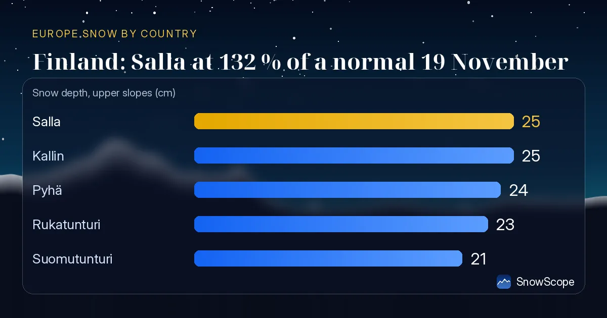
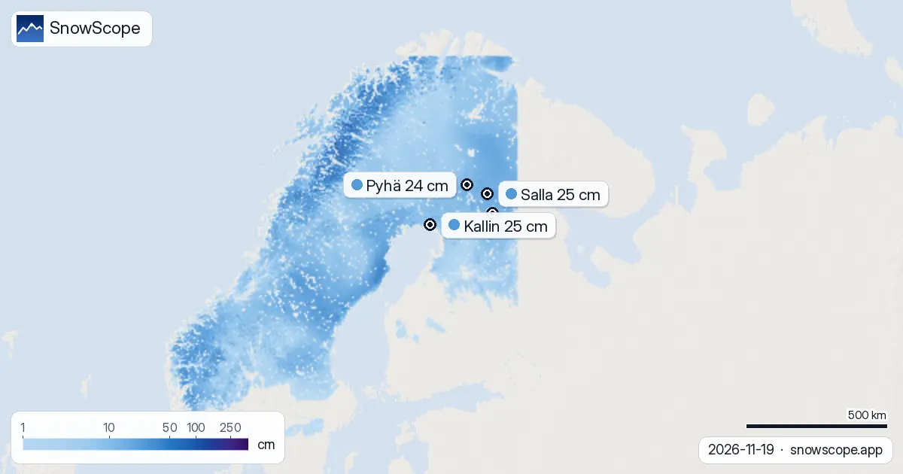

Finland: Salla at 132 % of a normal 19 November
At about 356 m, Salla has 25 cm today, where a normal 19 November has 19 cm: 132 % of the usual depth.
See the live snow forecast for Salla in the SnowScope appSnow depth, powder alerts and the 3D map, free.
Ahead of a normal year
A week ago the same spot had 5 cm. The early lead matters most for the lower and middle runs, which usually wait until December for this much snow.
166,530 km² of snow-covered ground in Finland this Thursday, about the same as yesterday. In other words, 55 % of the mapped high ground is white.
| Resort | Today | Normal for the date | Share of normal |
|---|---|---|---|
| Salla | 25 cm | 19 cm | 132 % |
| Kallin | 13 cm | 5 cm | 260 % |
| Pyhä | 18 cm | 18 cm | 100 % |
| Rukatunturi | 21 cm | 17 cm | 124 % |
| Suomutunturi | 17 cm | 16 cm | 106 % |

Compared with past winters
Here is how the deepest resorts compare with their usual 19 November: Salla: 25 cm at about 356 m, against 19 cm in a normal year; Kallin: 13 cm at about 40 m, against 5 cm in a normal year; Pyhä: 18 cm at about 285 m, against 18 cm in a normal year; Rukatunturi: 21 cm at about 390 m, against 17 cm in a normal year.
3 of these 4 resorts are above their usual depth for the date.
These depths are for one height on each mountain, below the top, so they read lower than the upper-slope numbers further down.
In past winters the best snow at Salla usually came early March / mid-March.

The resorts with the most snow
The deepest snow of the country's resorts is at Salla: 25 cm.
Close behind: Kallin (25 cm), Pyhä (24 cm), Rukatunturi (23 cm) and Suomutunturi (21 cm).
At Salla: 8 cm of fresh snow over three days, 3 cm more expected by Sunday 22 November.
Kallin picked up 5 cm in the last three days and could add 3 cm by Sunday 22 November.
Snow lies on the upper slopes of 28 out of 67 resorts in Finland.
The rest of the shortlist: Pyhä: 24 cm on top, 10 cm in three days, 6 cm expected; Rukatunturi: 23 cm on top, 9 cm in three days, 4 cm expected; Suomutunturi: 21 cm on top, 7 cm in three days, 5 cm expected.
Forecast for the week
Snow is in the forecast: up to 12 cm by the end of the third day, up to 13 cm within seven days.
Saturday 21 November stands out, with up to 6 cm in a day.
Further out, days 8 to 14 show up to 6 cm on the snowiest slopes.
Snow depth by height
Snow depth on the ground, height by height: between 0 and 500 m, 5 cm on average, 55 % covered; between 500 and 1,000 m, 16 cm on average, 100 % covered; between 1,000 and 1,500 m, 41 cm on average, 100 % covered.
Seven days of snow cover
Snow cover in Finland over the last days: 16 November 157,360 km²; 17 November 183,210 km²; 18 November 165,910 km²; 19 November 166,530 km².
The deepest resort changed hands 1 times this week.
Skiing conditions
Fresh snow on top of the base means soft turns on the upper slopes, while the lower runs stay patchy.
With more snow in the forecast, the next days should improve things further.
How much of the country is white
Most of the ground is white from about 200 m up. A week ago it was 103,050 km², so the cover has grown by 63,480 km².
New snow in the last three days
In the last 72 hours the most new snow, up to 11 cm, fell over the Kainuu hills and the Ruka fells.
The last 24 hours alone brought up to 3 cm.
About 151,680 km² received at least 5 cm.
The neighbours today
For comparison, the neighbours on the same day: Sweden: 87 % white, deepest Björkliden with 139 cm, up to 19 cm in the week ahead; Norway: 89 % white, deepest Riksgränsen with 167 cm, up to 33 cm in the week ahead.
Planning a day on the snow
Above 500 m the ground is almost fully white (100 % covered), so runs up there have a continuous base.
Between 0 m and 500 m the cover is patchy, about 55 % white: expect grass and stones between the snow.
If you can choose the day, go after Saturday 21 November: the fresh snow then has time to settle and the roads to be cleared.
Tips for skiers
- Early-season snow is thin over rocks: ski the groomed runs first.
- Roads to the higher resorts may need winter tyres or chains.
- Check the resort's own lift status before you travel.
About these numbers
Resort snow depths are the deepest snow on the resort's upper slopes from the SnowScope snow model (about 1 km, run of 19 November); they are estimates for an area, not a measurement at one point. Station values are measurements on the date shown. Forecasts can change. Always read the official avalanche bulletin before going off-piste.
Cite this report
For research, teaching or the press: the numbers and charts are free to reuse under CC BY 4.0 with this citation.
SnowScope (2026), Finland: Salla at 132 % of a normal 19 November, https://snowscope.app/blog/en/2026/11/finland-snow-ahead-of-normal-19-november-2026.html, accessed 2026-11-19
SnowScope (Atlas Labs). (2026, November 19). Finland: Salla at 132 % of a normal 19 November. SnowScope snow reports. https://snowscope.app/blog/en/2026/11/finland-snow-ahead-of-normal-19-november-2026.html
BibTeX
@misc{snowscope2026finlandsnowaheadofnormal,
author = {{SnowScope (Atlas Labs)}},
title = {Finland: Salla at 132 % of a normal 19 November},
year = {2026},
month = nov,
howpublished = {\url{https://snowscope.app/blog/en/2026/11/finland-snow-ahead-of-normal-19-november-2026.html}},
note = {Published 2026-11-19 12:58 UTC; accessed 2026-11-19}
}· CC BY 4.0 · Methods, data and tools →
Salla: snow and temperature by height, this winter vs last (tools) →
Follow Salla
Free: a message when fresh snow is coming, and the forecast every morning.
More snow reports

Snow is falling on Slovenia's ski mountains today: about 37 cm on Kanin and 21 cm on Krvavec. Where the snow lies, how it compares with past winters, and the next snowy day.

Tornik on Zlatibor had up to 39 cm on its upper slopes on 15 November 2026; by Wednesday it had melted. Kopaonik barely turned white. The week day by day and what comes next.

Pick a region, dates, budget and what matters; get every resort ranked with the likely snow at the start, the pass, hotel and food per person, chalets to book, and a game mode.